title: 硬件维修笔记
tags:
- 焊台
- 热风枪
- linux
- BGA
- 飞线
- 助焊剂
- 贴片
- 电烙铁
id: 996
categories: - Hardware
date: 2017-11-12 20:34:44
焊台
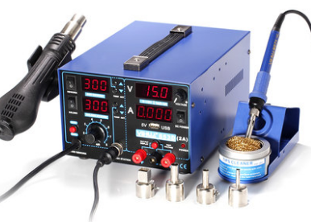
焊台(Soldering station)由一个外部电源加上热风枪(Heat gun)或电烙铁(Soldering iron)组成，通过给焊料（solder, 通常是指锡丝）供热，使其熔化，从而使两个部位焊接起来，
相比电烙铁，焊台的电源可以控制功率，因此具有很多优点，化锡快，防静电、休眠、温控、安全。
根据电源和用途，市面上主要有以下几种，也有三合一焊台。
- 恒温焊台
- 热风焊台
- 高频焊台
烙铁头
烙铁头(Tips)是主要成分是铜、镀层含铁、镍、鉻、锡四种金属，生产核心工艺是电镀。
- 铜 - 导热
- 铁 - 抗腐蚀，延长寿命
- 镍 - 防止镀铁层生锈
- 铬 - 不粘锡，防止锡往上跑
- 锡 - 头部用于沾锡
烙铁头使用寿命以焊点为单位，正常使用一般在15000焊点以上。镀层厚度影响使用寿命，温度也影响使用寿命，一般不超过380摄氏度。
注意保养烙铁头，焊接前清理旧锡和氧化物，加锡焊接。用完后加一层锡防止氧化。因为氧化后不沾锡。
烙铁头由功率限制，根据电源的功率，选用适当的烙铁头。
根据发热组丝的结构和导热方式分为内热式(internal heating type)和外热式(external heating type)两种
内热式
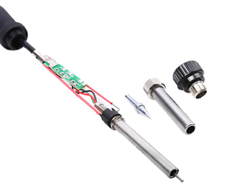
发热组丝绕在一根陶瓷棒上，外面套上陶瓷管绝缘，烙铁头套在陶瓷管上，热量从内部传到外部。
发热快，热效率高，功率较小，适合焊接精密器件，不产生感应电，寿命短。
外热式
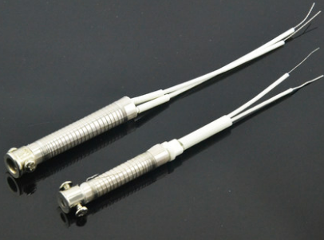
发热丝绕在一根中间有孔的铁管上，里外用云母片绝缘，烙铁头插在中间孔里，热量从外部传到内部。
发热慢，热效率低，功率较大，适合焊接大件，容易产生感应电损坏精密电子元件，焊接时最好接地。
形状用途
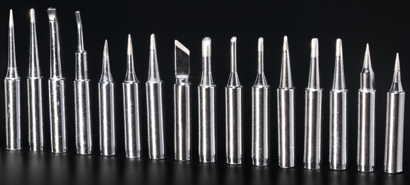
烙铁头形状不同用途也不同，市面上主要由下列几种
- 圆头(B型) - 点焊，拖焊都可
- 刀头(K型) - 拖焊，修证锡桥
- 尖头(I型) - 飞线，精细焊接，修证锡桥
- 牛角头(I型) - 飞线，拖焊，精细焊接，修证锡桥
- 马蹄头(C型) - 粗线材，大面积焊接
- 一字头(D型) - 粗线材，大面积焊接
热风枪
热风枪主要是利用发热电阻丝的枪芯吹出的热风来对元件进行焊接与摘取元件的工具。可以控制风速和温度，温度一般控制在300度到400度，使用不同的风枪嘴对不同的元件进行吹焊。
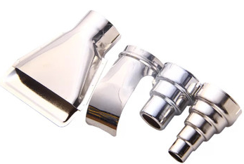
助焊剂
松香块
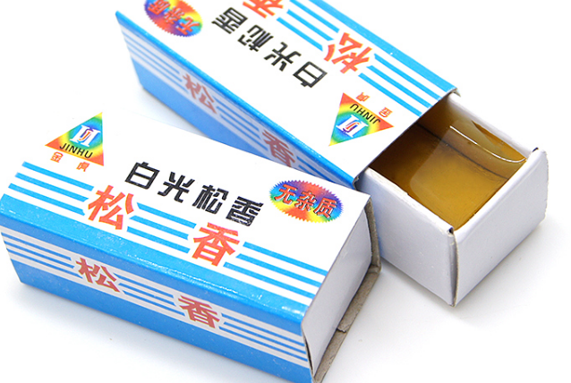
市面上卖的松香块，一般用在烙铁头上，特性有以下。
- 除氧化膜
- 防止氧化
- 减小锡表面张力
焊宝
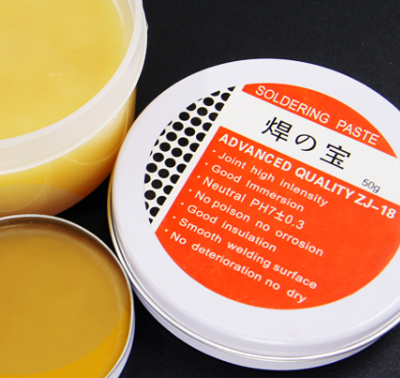
又称焊油，焊膏。油状物，熔点比松香低，其沸点仅稍高于焊锡的熔点。用于增加锡的流动性，也可以用于清洁多余的锡。并且具有黏性的特性，可以用于暂时固定IC元件。大多数焊宝为酸性，易腐蚀PCB，推荐选用免洗中性的焊宝。
焊锡
焊锡分有铅和无铅，铅和锡的比例影响锡的熔点。带铅的焊锡影响环境和身体。焊锡产生的烟尘包含锡的氧化物和铅及其化合物，有可能引起锡尘肺。不带铅的焊锡熔点高，焊接性能差。操作时带上口罩，在通风环境下作业。
锡丝
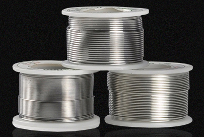
由锡合金和助剂两部分组成，针对精密器件，一般使用带助焊剂的锡丝，优点是锡的流动性好，锡球光亮饱满。
锡球
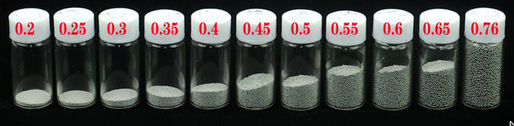
又称锡珠(Solder ball)，球状的焊料，用于BGA封装植球(reballing)，使用回流工艺焊接。
锡浆
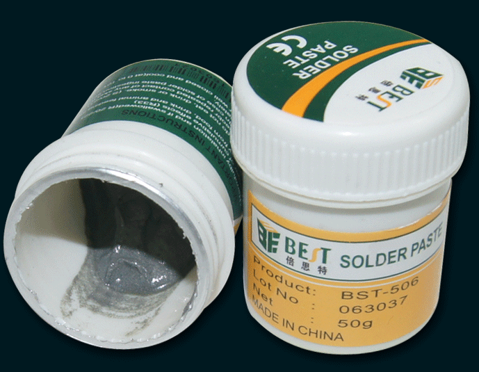
又称锡膏(Solder paste)，主要由助焊剂和焊料粉组成，助焊剂主要由活化剂、触变剂、树脂、溶剂组成。使用回流焊，加热后锡浆流向焊接处，溶剂蒸发。
储存在5-10摄氏度的环境下，有效期一般6个月，开封后保存期限为5天。如果变干燥，用几滴锡浆稀释水进行稀释。
使用时先回温，搅拌均匀，进行BGA封装植球操作使用网板和刮刀，如果时TSOP封装，直接刷上少量锡浆。
其他工具
真空吸笔
又叫IC起拔器，配合拖焊操作，用于拔起贴片式的IC。
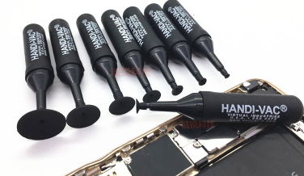
防静电镊子
用于各种精细操作，飞线必备
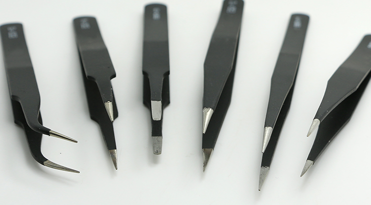
植球网
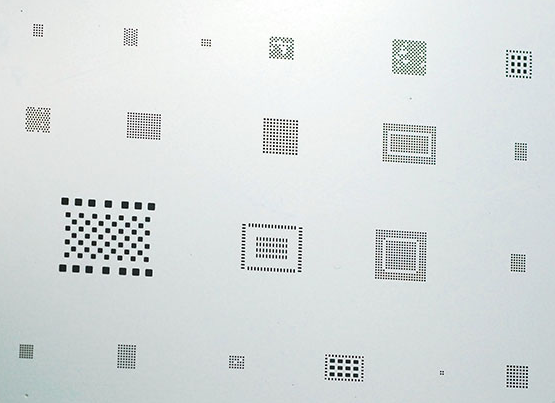
防静电软毛刷
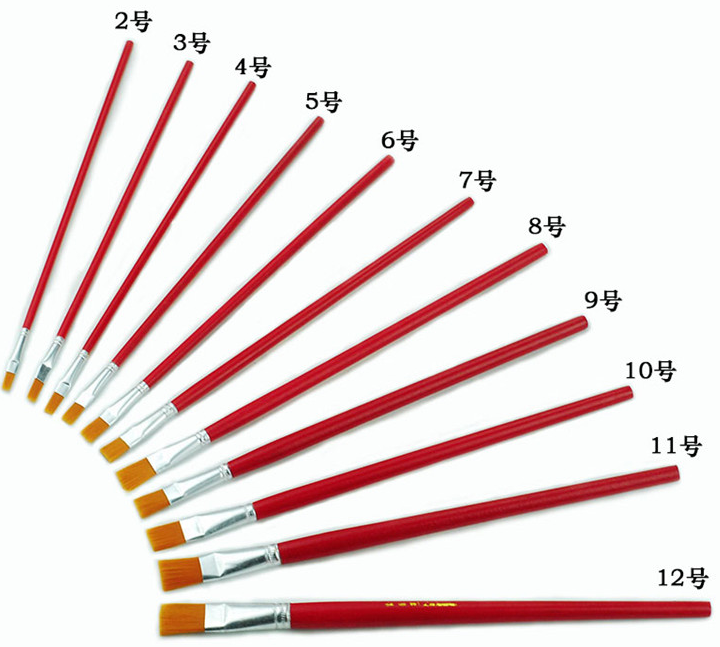
刮刀
IC刮刀，部分厂商会用胶水粘住IC，用于拆胶。也可以刮开PCB阻焊层，进行飞线。
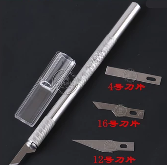
锡浆刮刀，用于把锡浆刮入植球网。
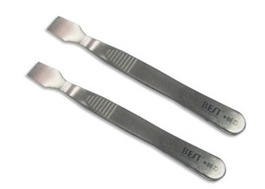
漆包线
一般使用0.1mm规格，用于飞线
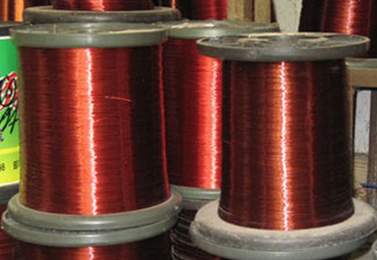
导电银漆
用于连接PCB的两个焊点，起到飞线的效果。也可以用于修复掉落的焊盘。
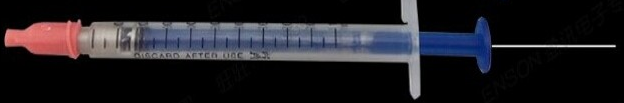
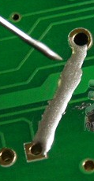
刮开焊盘的走线，涂上导电银漆，晾干后就修复了。
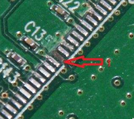
清理
高温海绵
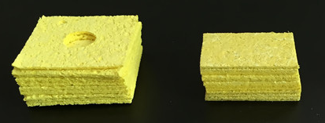
用于清洁烙铁头，使用前加水，挤掉多余水分，水分易腐蚀烙铁头。清洁时用适当的力度反复往同一个方向擦拭，如果氧化层过厚，可以沾上松香进行擦除。
除锡球
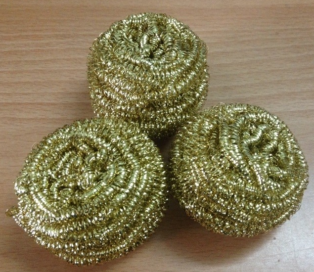
用于清洁烙铁头，相比高温海棉清洁力度大，采用铜丝材质内含助焊剂从而延长烙铁头使用寿命。
吸锡带
主要成分铜线，配合焊膏使用，用于清理锡桥或者锡网。
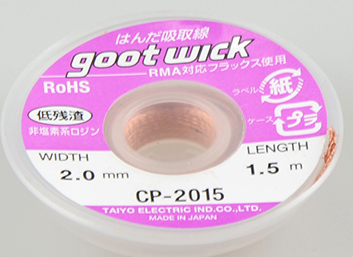
吸锡器
用于去除较大的锡块，用电烙铁加热锡块后使用。
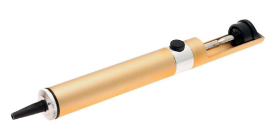
洗板水
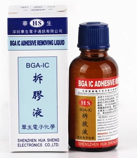
又叫拆胶液，用于溶解残留在PCB上的助焊剂，防止焊锡膏腐蚀PCB。
接线器
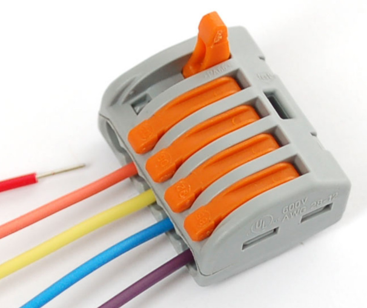
免破线夹，电线连接器
- 单股硬导线
- 多股硬导线
- 多股软导线
保护
热融枪
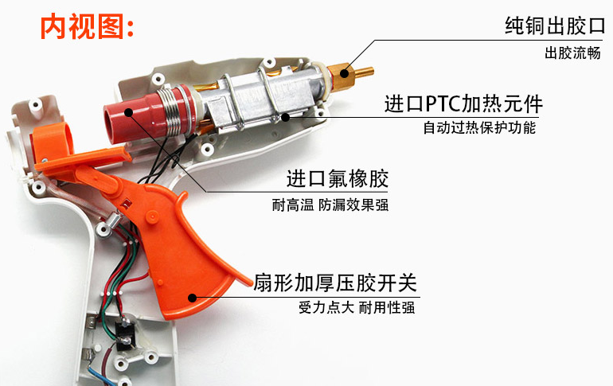
用于给元件上胶，固定并保护焊点。一般飞线之后点胶。
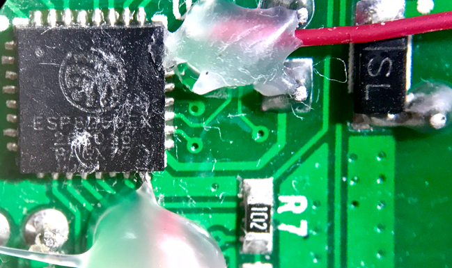
高温胶带
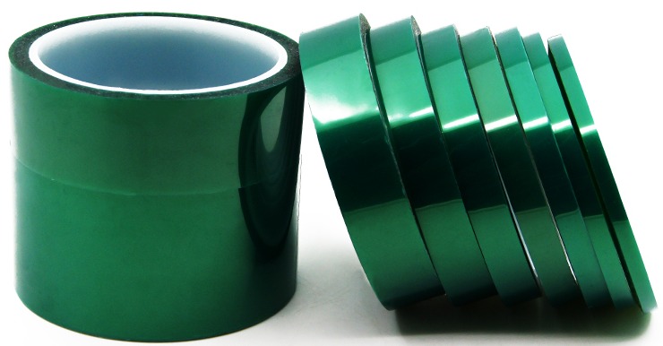
用于PCB保护的高温胶带，又叫PET，有很多种颜色，只是色浆不同而已，也可以使用美纹纸(Masking tape)。耐高温，用于保护非焊接目标的电子元件。
元件类型
不同的元件类型有不同的焊接工艺
直插式
PTH (Plating Through Hole) 是通孔直插式元件。一般采用点焊。
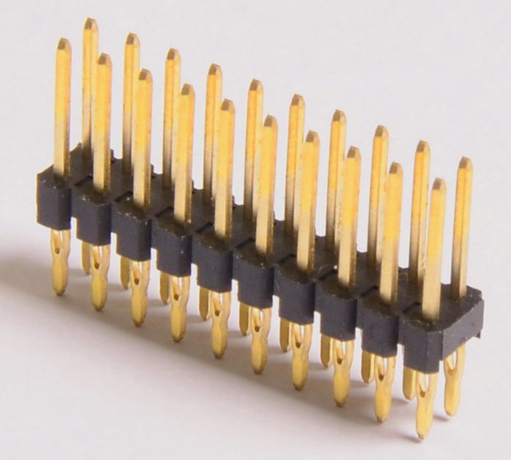
贴片式
SMT（surface mounting technology）即表面贴装技术，根据贴片式元件封装方式采用不同的焊接方式。TQFP、TSOP一般采用拖焊或者吹焊。BGA只能吹焊。
TQFP
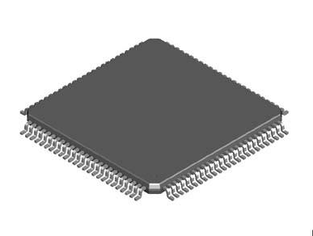
TSOP
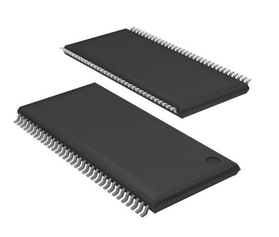
BGA
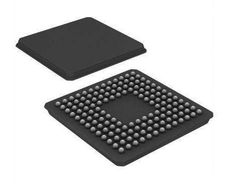
焊接工艺如下，贴片式技术要求较高，建议使用返修台(rework station)进行操作。
- 锡膏印刷
- 贴片
- 回流焊
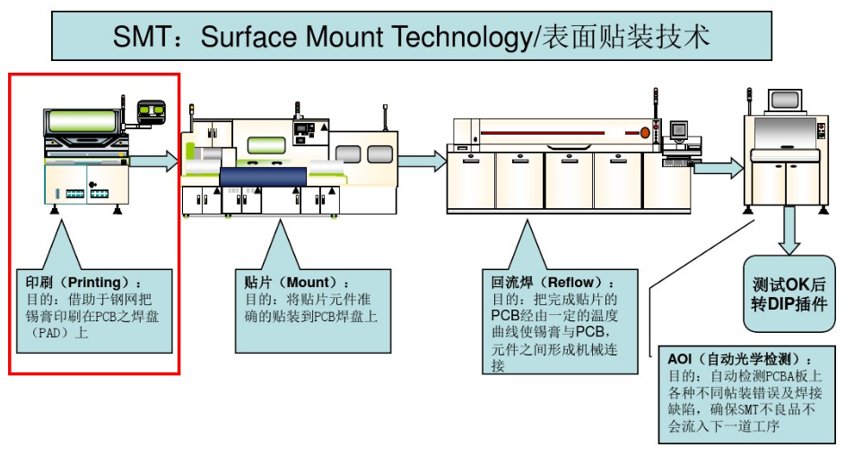
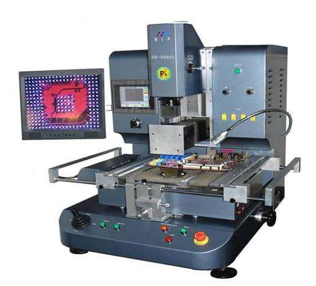
如果是BGA封装且没有对齐线，建议使用光学返修台进行对齐。